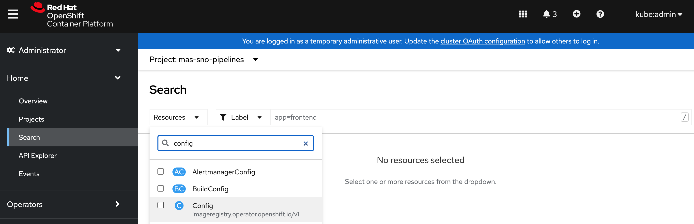
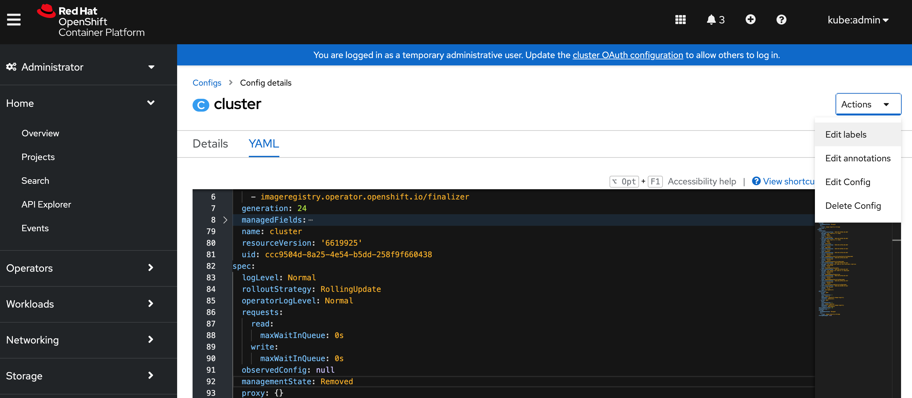
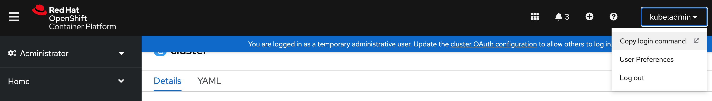
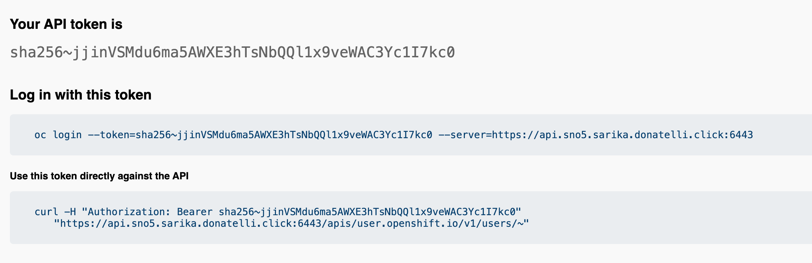

Single Node OpenShift
Summary
Single Node OpenShift (SNO) is a configuration of a standard OpenShift cluster that consists of a single control plane node that is configured to run workloads on it. This configuration offers both control and worker node functionality, allowing users to deploy a smaller OpenShift footprint and have minimal to no dependence on a centralized management cluster. SNO can run autonomously when needed, making it a useful solution for resource-constrained environments, demos, proof of concepts, or even on-premises deployments.
By deploying SNO, users can experience the benefits of OpenShift in a more compact environment that requires fewer resources. It can also provide a simple and efficient way to test new features or applications in a controlled environment. However, it's important to keep in mind that SNO lacks high availability, so it may not be suitable for mission-critical workloads that require constant uptime.
Overall, SNO offers a flexible and convenient way to deploy OpenShift for a variety of use cases.
Highlights
- Automated SNO installation on AWS.
- Assisted Installer for SNO installation on bare metal and vSphere. The Assisted Installer uses a wizard on Red Hat’s OpenShift Cluster Manager site.
- Local storage can be configured using ODS LVM Operator
- Automated installation of MAS, Manage, Mobile, and DB2 using ansible-devops/CLI.
- Generates JDBC Configuration for all three external databases(DB2, Oracle, SQL server) from CLI.
- Supports all valid combinations of industry solutions and add-ons based on the compatibility matrix.
- Supports 70 concurrent users.
- Entitement needed for the official support.
- Supported on bare metal, vSphere, Red Hat OpenStack, and Red Hat Virtualization platforms.
If you want to use Persistent Volumes, you’ll need an additional disk, an SSD preferably, and configre ODS LVM Operator to use it.
When to use Single Node OpenShift?
- For edge sites or scenarios where OpenShift clusters are required, but high availability is not critical, Single Node OpenShift can be an appropriate solution.
- For developers who want to experience a "real" cluster environment, Single Node OpenShift is a good option. It enables them to develop and deploy applications in a cluster environment, providing a "small" OpenShift experience.
- It's important to note that Single Node OpenShift lacks high availability, which is a tradeoff that should be considered.
I have Single Node OpenShift running on a baremetal environment with 16 Cores, 64GB RAM and 2 SSDs with MAS 8.10 and Manage 8.6. The first SSD has the OS, and the second disk is configured to be used by the LVM Operator.
Use Cases
- Small MAS and Manage-only implementations that range from 70 concurrent users
- Satellite / Disconnected deployments, possibly connected to a big MAS. It can sync data to Central Data Center for Maximo EAM
- Upgrading small Maximo customers to MAS
- Demo & PoC

Requirements
- OpenShift: 4.10+
- vCPU: 16Cores
- RAM: 64Gb
- IBM entitlement Key : Log in to the IBM Container Library with a user ID that has software download rights for your company’s Passport Advantage entitlement to get the entitlement key.
- Openshift pull secret file (pull-secret). It can be downloaded from [here] (https://access.redhat.com/management). You need a valid redhat account for downloading.
- MAS license file (license.dat): Access IBM License Key Center to the Get Keys menu select IBM AppPoint Suites. Select
IBM MAXIMO APPLICATION SUITE AppPOINT LIC.more details can be found in here - Docker/Podman
- AWS
- Valid AWS access key id
- Secret access key: If you don't it, ask your aws account admin to create one in IAM service
- Domain or subdomain: If you don't have one, ask your aws account admin to register one through AWS Route53
- Bare metal/vSphere:
- Requirements link
Note
If you are installing ODS LVM, you’ll need an additional disk, an SSD preferably, and configre ODS LVM Operator to use it.
Openshift Installation
- Set up IBM MAS DevOps ansible collection docker container
mkdir ~/sno
cd ~/sno
docker pull quay.io/ibmmas/cli
docker run -dit --name sno quay.io/ibmmas/cli:latest bash
- Log into the docker container; create a folder for mas configuration; then exit the container
docker exec -it sno bash
mkdir masconfig
exit
- Copy pull-secret and mas license file into the docker container
docker cp pull-secret sno:/mascli/masconfig/pull-secret
docker cp license.dat sno:/mascli/masconfig/license.dat
If you are installing on AWS, go to the AWS section. If you are installing on Bare Metal/vSphere, go to the Bare Metal/vSphere section.
AWS
- Log into docker container
docker exec -it sno bash
Available commands:
- mas install to launch a MAS install pipeline
- mas provision-fyre to provision an OCP cluster on IBM DevIT Fyre (internal)
- mas provision-roks to provision an OCP cluster on IBMCloud Red Hat OpenShift Service (ROKS)
- mas provision-aws to provision an OCP cluster on AWS
- mas provision-rosa to provision an OCP cluster on AWS Red Hat OpenShift Service (ROSA)
- mas setup-registry to setup a private container registry on an OCP cluster
- mas mirror-images to mirror container images required by mas to a private registry
- mas configure-ocp-for-mirror to configure a cluster to use a private registry as a mirror
- Run the command to provision SNO AWS Cluster. It will automatically detect the single enode.
- Enter your AWS credentials:
- AWS API Key ID
- AWS Secret Access Key
- AWS Secret Access Key
- Cluster Name
- AWS Region
- AWS Base Domain
mas provision-aws
IBM Maximo Application Suite AWS Cluster Provisioner
Powered by https://github.com/ibm-mas/ansible-devops/
AWS Access Key ID
Provide your AWS API Key ID (if you have not set the AWS_ACCESS_KEY_ID
environment variable) which will be used to provision an AWS instance.
AWS API Key ID > AKIAWKXUCZ55STYXXX
AWS Secret Access Key
Provide your AWS Secret Access Key (if you have not set the AWS_SECRET_ACCESS_KEY
environment variable) which will be used to provision an AWS instance.
AWS Secret Access Key > HiIoMnhB13tKthkiBlXvpJM9g/znKKlCgJoyxxxx
Re-use saved AWS Secret Access Key Starting 'HiIoMnhB13tKthkiBlXvpJM9g/znKKlCgJoyxxxx'? [Y/n]
AWS Cluster Configuration
Cluster Name > sno
AWS Region > us-east-2
AWS Base Domain > buyermas4aws.com
Do you want single node openshift [Y/n]
OCP Version:
1. 4.10 EUS
Select Version > 1
Proceed with these settings [y/N] y
- You see the following message for your cluster after it is provisioned.
AWS cluster is ready to use
Connected to OCP cluster: https://console-openshift-console.apps.sno.buyermas4aws.com
Bare Metal/vSphere
Installation
- OpenShift Container Platform(OCP) installation on a single node instructions link
Storage Class
- Local storage in OpenShift means storage devices or filesystems available locally on a node server. You need to provide the cluster with a storage class and related provisioner.
- Install LVM-Operator for local storage.
Note
You’ll need an additional disk, an SSD preferably, and configre ODS LVM Operator to use it.
You can install LVM operator from operator hub.
- Install ODF LVM Operator from OperatorHub

- Click on the tile and install

- Click Install

- After the operator is installed, click on
View Operator

- Create LVM Operator Instance

- Configure the instance

- After Configuration, the LVM storage class is created

-
Set the LVM storage class as the default:
- In the OpenShift Console UI, go to Storage -> StorageClasses using the left menu. You should see
odf-lvm-vg1. - Click on it, in the next screen click on the YAML tab.
- Add storageclass.kubernetes.io/is-default-class: "true" under the annotations.
- In the OpenShift Console UI, go to Storage -> StorageClasses using the left menu. You should see
-
The YAML should look like this:
kind: StorageClass
apiVersion: storage.k8s.io/v1
metadata:
name: odf-lvm-vg1
uid: 55909d9c-882c-4cbb-962d-e7dbed289946
resourceVersion: '7200873'
creationTimestamp: '2023-03-26T02:15:25Z'
annotations:
description: Provides RWO and RWOP Filesystem & Block volumes
storageclass.kubernetes.io/is-default-class: 'true'
managedFields:
provisioner: topolvm.cybozu.com
parameters:
csi.storage.k8s.io/fstype: xfs
topolvm.cybozu.com/device-class: vg1
reclaimPolicy: Delete
allowVolumeExpansion: true
volumeBindingMode: WaitForFirstConsumer
- You can also use CLI command to set the storageclass as the default:
oc patch storageclass odf-lvm-vg1 -p '{"metadata": {"annotations":{"storageclass.kubernetes.io/is-default-class":"true"}}}'
Enable Image Registry
You need to enable the image registry for building and pushing of images. Link: configuring the registry for bare metal
- In the OpenShift Console UI, Home->Search for
config

- Click
cluster. Go to theYAMLtab. Click on the top rightActiondrop down and selectEdit Config.

-
Update the cluster yaml:
- Set managementState from
RemovedtoManaged:
managementState: Removedto
managementState: Managed- Set rolloutStrategy from
RollingUpdatetoRecreate:
rolloutStrategy: RollingUpdateto
rolloutStrategy: Recreate- Set Storage:
storage: {}to
storage: pvc: claim: '' - Set managementState from
You can also use oc edit to update the cluster yaml using command line:
$ oc edit configs.imageregistry/cluster
Check if the image-storage-registry PVC is bound. If it is in pending status, please follow the steps in "Troubleshooting" section before installing MAS and Manage.
MAS and Manage Installation
- Login to your OpenShift: Use the OpenShift Console top right pulldown menu to get the login command to OpenShift.

- Click on the
Copy login command, the click on the “Display Token” word that will be shown in the page that just opened, and then copy the login command shown underLog in with this token:

$ oc login --token=sha256~lt1uU_p_pXkBazB-DRh7-P5EVWvL1Drwvlu8o_G21u0 --server=https://api.sno4.sarika.donatelli.click:6443
The server uses a certificate signed by an unknown authority.
You can bypass the certificate check, but any data you send to the server could be intercepted by others.
Use insecure connections? (y/n): y
Logged into "https://api.sno4.sarika.donatelli.click:6443" as "kube:admin" using the token provided.
You have access to 76 projects, the list has been suppressed. You can list all projects with 'oc projects'
Using project "default".
Welcome! See 'oc help' to get started.
- Log into the docker container:
- docker exec -it sno bash
- Run mas install:
- mas install
mas install
IBM Maximo Application Suite Installer
Powered by https://github.com/ibm-mas/ansible-devops/ and https://tekton.dev/
Current Limitations
1. Support for airgap installation is limited to MAS 8.8 (core only) at present
1. Set Target OpenShift Cluster
Connected to OCP cluster:
https://console-openshift-console.apps.sno4.sarika.donatelli.click
Connect to a different cluster [y/N] N
2. Install OpenShift Pipelines Operator
OpenShift Pipelines Operator is installed and ready ...
3. Configure Installation
MAS Instance ID > sno
Use online catalog? [y/N] y
MAS Version:
1. 8.10
2. 8.9
Select Subscription Channel > 1
3.1. License Terms
For information about your license, see To continue with the installation, you must accept the license terms.
Do you accept the license terms? [y/N] y
4. Configure Operation Mode
Maximo Application Suite can be installed in a non-production mode for internal development and testing, this setting cannot be changed after installation:
- All applications, add-ons, and solutions have 0 (zero) installation AppPoints in non-production installations.
- These specifications are also visible in the metrics that are shared with IBM® and on the product UI.
Use non-production mode? [y/N]
5. Configure Domain & Certificate Management
Configure Custom Domain [y/N]
6. Application Selection
Install IoT [y/N]
Install Manage [y/N] y
Custom Subscription Channel > 8.6.x-dev
+ Create demo data [Y/n]
+ Configure JMS [y/N]
+ Customize database settings [y/N] y
Schema > maximo
Tablespace > maximo
Indexspace > maximo
Install Optimizer [y/N]
Install Visual Inspection [y/N]
Install Predict [y/N]
Install Health & Predict - Utilities [y/N]
Install Assist [y/N]
7. Configure Db2
The installer can setup one or more IBM Db2 instances in your OpenShift cluster for the use of applications that require a JDBC datasource (IoT, Manage, Monitor, & Predict) or you may choose to configure MAS to use an existing database.
Install Db2 using the IBM Db2 Universal Operator? [Y/n] n
7.1 Database configuration for IoT
Maximo IoT requires a shared system-scope Db2 instance because others application in the suite require access to the same database source.
- Only IBM Db2 is supported for this database
System Database configuration for IoT is not required because the application is not being installed
7.2 Database configuration for Manage
Maximo Manage can be configured to share the system Db2 instance or use it's own dedicated database.
- IBM Db2, Oracle Database, & Microsoft SQL Server are all supported database options
Do you want to generate a dedicated JDBC configuration for Manage? [y/N] y
Select Local configuration directory > /mascli/masconfig
Configuration Display Name: jdbc-sb1-manage
JDBC Connection String: jdbc:sqlserver://;serverName=ssldbsvl1.fyre.ibm.com;portNumber=1433;databaseName=maxdb80;integratedSecurity=false;sendStringParametersAsUnicode=false;selectMethod=cursor;encrypt=true;trustServerCertificate=true;
JDBC User Name: maximo
JDBC Password: maximo
SSL Enabled [y/n]: y
Path to certificate file: /mascli/masconfig/mssql.pem
Configuring workspace-application JDBC configuration for sb1
8. Additional Configuration
Additional resource definitions can be applied to the OpenShift Cluster during the MAS configuration step.
The primary purpose of this is to apply configuration for Maximo Application Suite itself, but you can use this to deploy ANY additional resource into your cluster.
The following additional configurations will be applied:
- jdbc-sb1-wsapp.yaml
Are these the correct configuration files to apply? [y/N] y
9. Configure Storage Class Usage
Maximo Application Suite and it's dependencies require storage classes that support ReadWriteOnce (RWO) access mode:
- ReadWriteOnce volumes can be mounted as read-write by multiple pods on a single node.
Select the ReadWriteOnce storage classes to use from the list below:
- odf-lvm-vg1
ReadWriteOnce (RWO) storage class > odf-lvm-vg1
10. Configure IBM Container Registry
czYWZkOWRkMDNkNjJjIn0.aRsAu30HTYJ0aYUJ4hB46GAmgK6nCu9ZBDTF_mQ6jAoV0cGxhY2UiLCJpYXQiOjE1ODM0NjIwODMsImp0aSI6ImNxxxxxxxxxxxxxxxxx
11. Configure Product License
License ID > 0242ac11xxxx
License File > /opt/app-root/src/masconfig/license.dat
12. Configure UDS
Maximo Application Suite version v8.10+ no longer requires IBM User Data Services as a dependency.
13. Prepare Installation
If you are using using storage classes that utilize 'WaitForFirstConsumer' binding mode choose 'No' at the prompt below
Wait for PVCs to bind? [Y/n] n
Namespace 'mas-inst1-pipelines' is ready
Installed Task Definitions
NAME IMAGE
mas-devops-appconnect quay.io/ibmmas/cli:latest
mas-devops-cert-manager quay.io/ibmmas/cli:latest
mas-devops-cluster-monitoring quay.io/ibmmas/cli:latest
mas-devops-common-services quay.io/ibmmas/cli:latest
mas-devops-cos quay.io/ibmmas/cli:latest
mas-devops-cp4d quay.io/ibmmas/cli:latest
mas-devops-cp4d-service quay.io/ibmmas/cli:latest
mas-devops-db2 quay.io/ibmmas/cli:latest
mas-devops-gencfg-workspace quay.io/ibmmas/cli:latest
mas-devops-ibm-catalogs quay.io/ibmmas/cli:latest
mas-devops-kafka quay.io/ibmmas/cli:latest
mas-devops-mongodb quay.io/ibmmas/cli:latest
mas-devops-nvidia-gpu quay.io/ibmmas/cli:latest
mas-devops-sbo quay.io/ibmmas/cli:latest
mas-devops-sls quay.io/ibmmas/cli:latest
mas-devops-suite-app-config quay.io/ibmmas/cli:latest
mas-devops-suite-app-install quay.io/ibmmas/cli:latest
mas-devops-suite-app-upgrade quay.io/ibmmas/cli:latest
mas-devops-suite-config quay.io/ibmmas/cli:latest
mas-devops-suite-db2-setup-for-manage quay.io/ibmmas/cli:latest
mas-devops-suite-dns quay.io/ibmmas/cli:latest
mas-devops-suite-install quay.io/ibmmas/cli:latest
mas-devops-suite-mustgather quay.io/ibmmas/cli:latest
mas-devops-suite-upgrade quay.io/ibmmas/cli:latest
mas-devops-suite-verify quay.io/ibmmas/cli:latest
mas-devops-uds quay.io/ibmmas/cli:latest
Installed Pipeline Definitions
NAME AGE
mas-install 4s
mas-update 4s
mas-upgrade 4s
quay.io/ibmmas/cli:latest is available from the target OCP cluster
11. Review Settings
IBM Maximo Application Suite
Instance ID ............... sno
Catalog Source ............ ibm-operator-catalog
Subscription Channel ...... 8.10.x
IBM Entitled Registry ..... cp.icr.io/cp
IBM Open Registry ......... icr.io/cpopen
Entitlement Username ...... cp
Entitlement Key ........... eyJhbGci<snip>
IBM Maximo Application Suite Applications
IoT ...................... Skip Installation
- Monitor ............... Skip Installation
- Safety ................ Skip Installation
Manage ................... ibm-operator-catalog/8.6.x
- Predict ............... Skip Installation
Optimizer ................ Skip Installation
H & P Utilities .......... Skip Installation
Assist ................... Skip Installation
MVI ...................... Skip Installation
IBM Suite License Service
Catalog Source ............ ibm-operator-catalog
License ID ................ 0242ac11xxxx
License File .............. /workspace/entitlement/license.dat
IBM Entitled Registry ..... cp.icr.io/cp
IBM Open Registry ......... icr.io/cpopen
Entitlement Username ...... cp
Entitlement Key ........... eyJhbGci<snip>
IBM Cloud Pak Foundation Services
Catalog Source ............ ibm-operator-catalog
Proceed with these settings [y/N] y
12. Launch Installation
Installation started successfully
View progress:
https://console-openshift-console.apps.sno.buyermas4aws.com/pipelines/ns/mas-sno-pipelines
Tekton Pipeline
You can see the installation progess and logs from OpenShift Console in the mas-

Troubleshooting
BareMetal/VSphere
To enable building and pushing of images, the image-storage-registry PVC should be in the bound status. If the image-registry-storage PVC is in Pending status, you need to follow the steps below to update the image-storage-registry PVC:
- In the OpenShift Console UI, go to Storage->PersistentVolumeCLaims. Select
image-storage-registryPVC. - Go the YAML tab and download it using the Download button on the botton right.
-
Update the downloaded file.
- Remove the metadata fields uid, resourceVersion, creationTimestamp
- Remove the manageFields section
- Remove the status section
- Modify the accessModes from ReadWriteMany to ReadWriteOnce
-
Delete
image-storage-registryPVC. - Use the Create PersistentVolumeClaim button to create a new one (the project at the top right should still be openshift-image-registry). Click on the "Edit YAML” link at the top right of the screen. Replace the content of the yaml with the modified one you edited.
- Click the Create button at the bottom. The new PVC should immediately go into the “bound” state).
- Sample PVC
kind: PersistentVolumeClaim
apiVersion: v1
metadata:
name: image-registry-storage
namespace: openshift-image-registry
annotations:
imageregistry.openshift.io: 'true'
volume.beta.kubernetes.io/storage-provisioner: topolvm.cybozu.com
volume.kubernetes.io/storage-provisioner: topolvm.cybozu.com
finalizers:
- kubernetes.io/pvc-protection
spec:
accessModes:
- ReadWriteOnce
resources:
requests:
storage: 100Gi
storageClassName: odf-lvm-vg1
volumeMode: Filesystem
-
If
image-storage-registryPVC is still not bound:- Uninstall LVM operator.
- Clean the disk and reinstall LVM Operator.